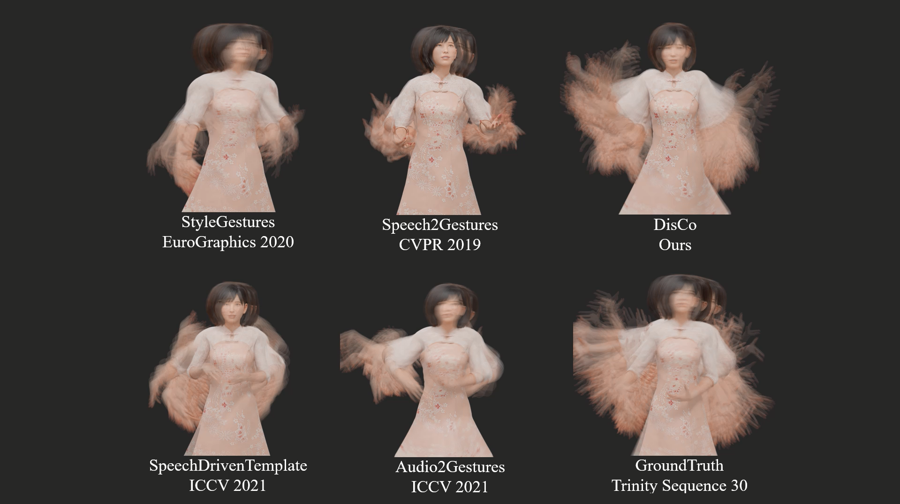

DisCo: Disentangled Implicit Content and Rhythm Learning for Diverse Co-Speech Gesture Synthesis


Paper
Code

Current co-speech gestures synthesis methods struggle with generating diverse motions and typically collapse to single or few frequent motion sequences, which are trained on original data distribution with customized models and strategies. We tackle this problem by temporally clustering motion sequences into content and rhythm segments and then training on content-balanced data distribution. In particular, by clustering motion sequences, we have observed for each rhythm pattern, some motions appear frequently, while others appear less. This imbalance results in the difficulty of generating low frequent occurrence motions and it cannot be easily solved by resampling, due to the inherent many-to-many mapping between content and rhythm. Therefore, we present DisCo, which disentangles motion into implicit content and rhythm features by contrastive loss for adopting different data balance strategies. Besides, to model the inherent mapping between content and rhythm features, we design a diversity-and-inclusion network (DIN), which firstly generates content features candidates and then selects one candidate by learned voting. Experiments on two public datasets, Trinity and S2G-Ellen, justify that DisCo generates more realistic and diverse motions than state-of-the-art methods.
Current co-speech gestures synthesis methods struggle with generating diverse motions and typically collapse to single or few frequent motion sequences, which are trained on original data distribution with customized models and strategies. We tackle this problem by temporally clustering motion sequences into content and rhythm segments and then training on content-balanced data distribution. In particular, by clustering motion sequences, we have observed for each rhythm pattern, some motions appear frequently, while others appear less. This imbalance results in the difficulty of generating low frequent occurrence motions and it cannot be easily solved by resampling, due to the inherent many-to-many mapping between content and rhythm. Therefore, we present DisCo, which disentangles motion into implicit content and rhythm features by contrastive loss for adopting different data balance strategies. Besides, to model the inherent mapping between content and rhythm features, we design a diversity-and-inclusion network (DIN), which firstly generates content features candidates and then selects one candidate by learned voting. Experiments on two public datasets, Trinity and S2G-Ellen, justify that DisCo generates more realistic and diverse motions than state-of-the-art methods.